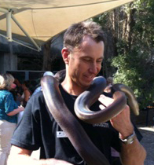

div.photo {
    float:middle;
    width:60%;
    max-width: 180px;
    min-width: 125px;
    border: none;
    margin: 0.0em;
    padding: 0.5em;
    margin-left:0.0em;
    margin-right:0.0em;
}

div.bioinfo {
    float:right;
    text-align: center;
    min-width: 150px;

}

div.biotext {
    float:left;
    min-width: 300px;
}

h6{
display: inline;
}
body .zocial { color: black; }</style>

<table width="100%" align="center">
	<tr> <!------ Rob's Bio -------->
		<td width = "30%">
			<div class="bioinfo">
			<h6>Dr Rob Lanfear</h6><br>
			<h6 style="font-size:100%">Lab Leader</h6><br>
			<a href="http://scholar.google.com.au/citations?hl=en&user=Se6txrMAAAAJ">Google Scholar</a><br>
			<a href="https://github.com/roblanf" class="zocial icon github flat">GitHub</a>
			<a href="mailto:robert.lanfear@mq.edu.au" class="zocial email icon flat">Email</a>
			</div>
		</td>
		<td align="center">
			<div class="photo"></div>
		</td>
		<td>
			<div class="biotext">
			Rob is an ARC Future Fellow and senior lecturer in genomics at Macquarie University. He is interested in molecular evolution and phylogenetics. When he's not at work, you can find him surfing or running up hills.
			</div>
		</td>

	</tr>

</table>
